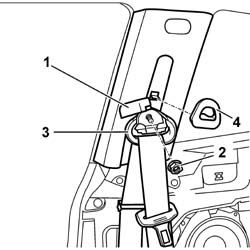
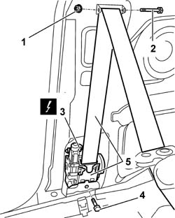

7065A12 FRONT SEAT BELT (ONE), LH OR RH, WITH PRETENSIONER ON WHEEL - R R
- Path
- Procedures > 70 FITTINGS > 7065 SEAT BELTS AND ACCESSORIES > 7065A FRONT SEAT BELTS > 7065A12 FRONT SEAT BELT (ONE), LH OR RH, WITH PRETENSIONER ON WHEEL - R R
- Kind
- repair procedure (removal / refitting; the operation number is the code)
- Applies to
- all engines; all production periods
- Interactive page
- https://sloeber94.github.io/elrnDB-aGt/en/#/125001985
Applies to: engines: 1.8 T.SPARK; all production periods
Applies to: all engines; all production periods
 Removing
Removing
 Refitting
RefittingOp. 7040L40 REAR COMPARTMENT SCUFF STRIP - R R
Op. 7050A22 REAR SEAT CUSHION - R+R
Op. 7050A14 SPLIT REAR SEAT ASSEMBLY - R+R
1. Lift up the bolt cover trim.
2. Undo the nut.
3. Move the seat belt relay.
4. Remove the knob.

Applies to: all engines; all production periods
1. Undo the nut.
2. Remove the pin and release the seat belt.
3. Disconnect the electrical connection from the pretensioner.
Name | Connector | |
|---|---|---|
3 | Driver's seat belt pre-tensioner | See Q20 DRIVER'S SEAT BELT PRE-TENSIONER |
Name | Connector | |
|---|---|---|
3 | Front passenger seat belt pretensioner | See Q21 FRONT PASSENGER SEAT BELT PRE-TENSIONER |
4. Undo the bolt.
5. Remove the seat belt with pretensioner.

Applies to: all engines; all production periods
Place the pretensioner in the special cabinet, resting it on a free surface.
Applies to: all engines; all production periods
Refitting
RemovingRefit the pretensioner, making sure that seat connects to the corresponding body retainer.
Tighten the pretensioner fixing bolt to the recommended torque.
 | Fastening | Component | Ø | Value (daNm) |
|---|---|---|---|---|
- | Bolt | FRONT SEAT BELT PRETENSIONER. | M7/16'' | 4.0 |
Connect the electrical connection for the pretensioner.
Name | Connector | |
|---|---|---|
- | Driver's seat belt pre-tensioner | See Q20 DRIVER'S SEAT BELT PRE-TENSIONER |
Name | Connector | |
|---|---|---|
- | Front passenger seat belt pretensioner | See Q21 FRONT PASSENGER SEAT BELT PRE-TENSIONER |
Place the seat belt in position and fit the middle fastening pin.
Tighten the middle pin fixing nut.
Fit the knob.
Fit the seat belt mechanism.
Tighten the nut fixing the idler to the recommended torque.
| Fastening | Component | Ø | Value (daNm) |
|---|---|---|---|---|
- | Nut | FRONT SEAT BELT IDLER | M7/16" | 40 |
Fit the trim.
Op. 7050A14 SPLIT REAR SEAT ASSEMBLY - R+R
Op. 7050A22 REAR SEAT CUSHION - R+R
Op. 7040L40 REAR COMPARTMENT SCUFF STRIP - R R
Check the operation of the system using the Examiner or another tester.
Topics linked from this page (3)
- 7040L40 REAR COMPARTMENT SCUFF STRIP - R R
- 7050A14 SPLIT REAR SEAT ASSEMBLY - R+R
- 7050A22 REAR SEAT CUSHION - R+R